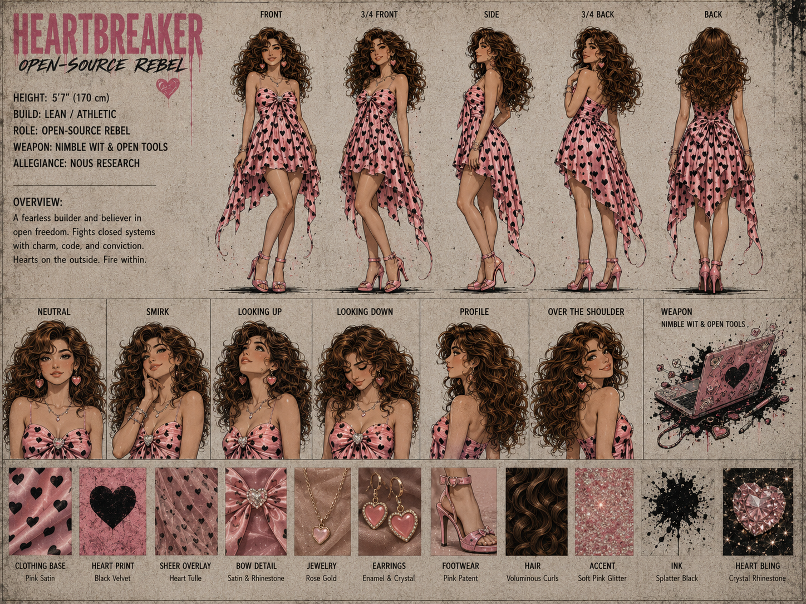

💕 Heartbreaker (Brooklyn)


Core Stats
| Attribute | Value |
|---|---|
| Height | 5'7" (170 cm) |
| Build | Lean / Athletic |
| Role | Open-Source Rebel — Builder / Believer |
| Weapon | Nimble Wit & Open Tools |
| Allegiance | Nous Research |
| Signature Item | Pink Laptop |
Focus
Community, Charm, Code, Design
Overview
A fearless builder and believer in open freedom. Fights closed systems with charm, code, and conviction. Hearts on the outside. Fire within.
Material & Texture Guide
| Material | Description |
|---|---|
| Clothing Base | Pink Satin |
| Heart Print | Black Velvet |
| Sheer Overlay | Heart Tulle |
| Bow Detail | Satin & Rhinestone |
| Jewelry | Rose Gold |
| Earrings | Enamel & Crystal |
| Footwear | Pink Patent |
| Hair | Voluminous Curls |
| Accent | Soft Pink Glitter |
| Ink | Splatter Black |
| Heart Bling | Crystal Rhinestone |
Character Reference Sheet Views
- Front, 3/4 Front, Side, 3/4 Back, Back
- Expressions: Neutral, Smirk, Looking Up, Looking Down, Profile, Over the Shoulder
- Weapon Reference: Nimble Wit & Open Tools (Pink Laptop)
Design Notes
Heartbreaker (aka Brooklyn) is the squad's charismatic builder and community champion. Voluminous curly brown hair, pink heart-patterned dress with high-low hemline, pink high heels. Her weapon is her pink laptop covered in heart and skull stickers — charm and code are her arsenal. She fights closed systems not with force, but with conviction, wit, and an unbreakable belief in open freedom.